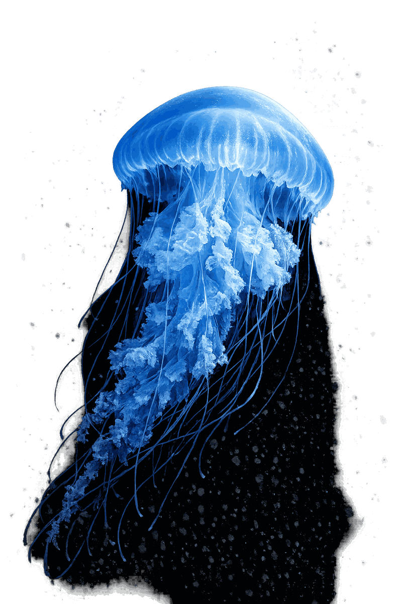
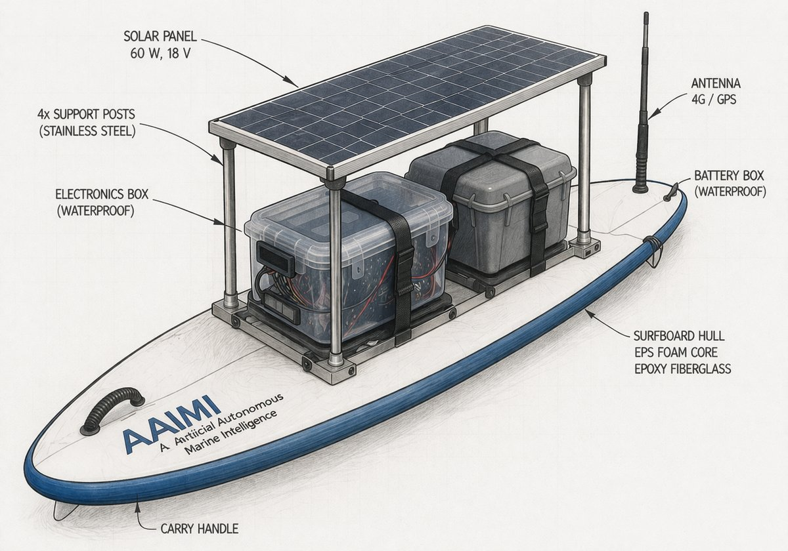
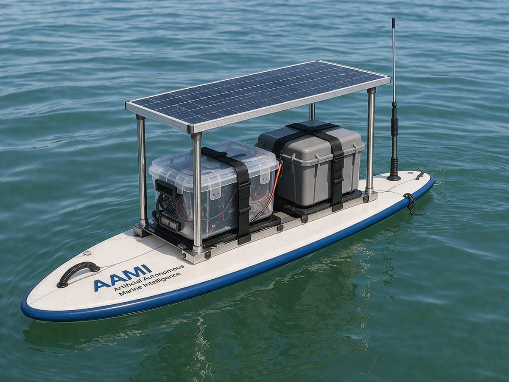

We build AI-controlled unmanned vessels that patrol, scan and protect — above and below the waterline. Autonomous reconnaissance for environmental monitoring, maritime security and defense. 24/7. No crew. No limits. Wir bauen KI-gesteuerte unbemannte Wasserfahrzeuge die patrouillieren, scannen und schützen — über und unter der Wasserlinie. Autonome Aufklärung für Umweltmonitoring, maritime Sicherheit und Verteidigung. 24/7. Keine Crew. Keine Grenzen.



Crewed vessels are expensive, limited by human endurance, and put lives at risk in dangerous waters. Autonomous systems change the equation entirely — they operate longer, reach further, and never need sleep. Bemannte Schiffe sind teuer, durch menschliche Ausdauer begrenzt und setzen Leben in gefährlichen Gewässern aufs Spiel. Autonome Systeme ändern die Gleichung grundlegend — sie operieren länger, reichen weiter und brauchen keinen Schlaf.
Contaminated waters, storm zones, minefields, hostile territories — machines go where people shouldn't. Every dangerous mission completed without a crew aboard is a life protected.Verseuchte Gewässer, Sturmzonen, Minenfelder, feindliche Gebiete — Maschinen gehen dorthin, wo Menschen nicht sein sollten. Jede gefährliche Mission ohne Besatzung ist ein geschütztes Leben.
No crew fatigue, no shift changes, no return to port for rest. Our vehicles operate for weeks continuously — through night, fog, and rough seas. Persistent presence where it matters.Keine Ermüdung der Crew, kein Schichtwechsel, keine Rückkehr zum Hafen. Unsere Fahrzeuge operieren wochenlang durchgehend — bei Nacht, Nebel und rauer See. Dauerhafte Präsenz wo es zählt.
Real-time sensor fusion, pattern recognition, and autonomous threat assessment. Our AI processes more data in seconds than a human crew could in hours — detecting anomalies invisible to the human eye.Echtzeit-Sensorfusion, Mustererkennung und autonome Bedrohungsbewertung. Unsere KI verarbeitet in Sekunden mehr Daten als eine menschliche Crew in Stunden — und erkennt Anomalien, die dem menschlichen Auge verborgen bleiben.
From environmental monitoring to maritime security and defense reconnaissance — one platform, many missions. The same vehicle that maps coral reefs can patrol critical infrastructure or support naval operations.Von Umweltüberwachung über maritime Sicherheit bis zur Verteidigungsaufklärung — eine Plattform, viele Missionen. Dasselbe Fahrzeug, das Korallenriffe kartiert, kann kritische Infrastruktur patrouillieren oder Marineoperationen unterstützen.
Two domains, one mission: complete maritime awareness. Our surface and subsurface platforms work independently or as coordinated swarms — covering every layer of the water column. Zwei Domänen, eine Mission: vollständiges maritimes Lagebild. Unsere Überwasser- und Unterwasser-Plattformen arbeiten unabhängig oder als koordinierte Schwärme — jede Schicht der Wassersäule abdeckend.
Operating at the air-water interface, our USVs combine radar, optical sensors and AIS tracking for complete surface awareness. Built for endurance in open ocean conditions with autonomous collision avoidance. An der Luft-Wasser-Grenzfläche operierend kombinieren unsere USVs Radar, optische Sensoren und AIS-Tracking für vollständiges Oberflächen-Lagebild. Gebaut für Ausdauer auf offener See mit autonomer Kollisionsvermeidung.
Descending into the deep, our UUVs navigate autonomously through complete darkness using sonar, LIDAR and inertial systems. They map the unseen, inspect the unreachable, and detect what hides beneath the surface. In die Tiefe abtauchend navigieren unsere UUVs autonom durch völlige Dunkelheit mittels Sonar, LIDAR und Inertialsystemen. Sie kartieren das Unsichtbare, inspizieren das Unerreichbare und entdecken was unter der Oberfläche verborgen liegt.
Versatile platforms for a world of challenges. From protecting marine ecosystems to securing national borders — our vehicles adapt to the mission. Vielseitige Plattformen für eine Welt voller Herausforderungen. Vom Schutz mariner Ökosysteme bis zur Sicherung nationaler Grenzen — unsere Fahrzeuge passen sich der Mission an.
Water quality monitoring, marine ecosystem mapping, oil spill detection, and climate data collection across vast oceanic regions.Wasserqualitätsüberwachung, Kartierung mariner Ökosysteme, Ölpest-Erkennung und Klimadatenerhebung über riesige ozeanische Regionen.
Port surveillance, coastal patrol, border protection, and critical infrastructure monitoring — 24/7, without fatigue.Hafenüberwachung, Küstenpatrouille, Grenzschutz und Überwachung kritischer Infrastruktur — 24/7, ohne Ermüdung.
Flood response, disaster damage assessment, missing person search operations, and emergency communication relay in crisis zones.Hochwassereinsatz, Katastrophen-Schadensbewertung, Vermisstensuche und Notfall-Kommunikationsrelais in Krisengebieten.
ISR missions, mine detection and countermeasures, threat assessment, and force protection in contested maritime environments.ISR-Missionen, Minenerkennung und -abwehr, Bedrohungsbewertung und Kräfteschutz in umkämpften maritimen Umgebungen.
BPMspace has over a decade of building intelligent software systems — from AI-powered exam proctoring to certification management. These proven platforms form the foundation of our autonomous vehicle intelligence. BPMspace hat über ein Jahrzehnt Erfahrung im Bau intelligenter Softwaresysteme — von KI-gestützter Prüfungsüberwachung bis zum Zertifizierungsmanagement. Diese bewährten Plattformen bilden das Fundament unserer autonomen Fahrzeugintelligenz.
SecureOnlineExam — AI-powered online proctoring with real-time fraud detection and behavioral analysis.SecureOnlineExam — KI-gestützte Online-Prüfungsüberwachung mit Echtzeit-Betrugserkennung und Verhaltensanalyse.
Syllabus & Question Management — Certification exam platform built for ICO International Certification Organization.Syllabus & Question Management — Zertifizierungs-Prüfungsplattform für die ICO International Certification Organization.
AI Syllabus Manager — Multi-Agent & Multi-LLM system for creating, verifying and approving syllabi, syllabus chapters, questions and answers. Automated quality assurance through intelligent agent collaboration.AI Syllabus Manager — Multi-Agenten- & Multi-LLM-System zum Erstellen, Verifizieren und Freigeben von Lehrplänen, Lehrplankapiteln, Fragen und Antworten. Automatisierte Qualitätssicherung durch intelligente Agenten-Kollaboration.
Certification Organisation Management — End-to-end workflows for accreditation and certification bodies.Certification Organisation Management — End-to-End-Workflows für Akkreditierungs- und Zertifizierungsstellen.
Agile Process Management — Intelligent business process automation with adaptive workflows.Agile Process Management — Intelligente Geschäftsprozessautomatisierung mit adaptiven Workflows.
Lightweight Identity & Access Management — Secure authentication and authorization framework.Lightweight Identity & Access Management — Sicheres Authentifizierungs- und Autorisierungs-Framework.